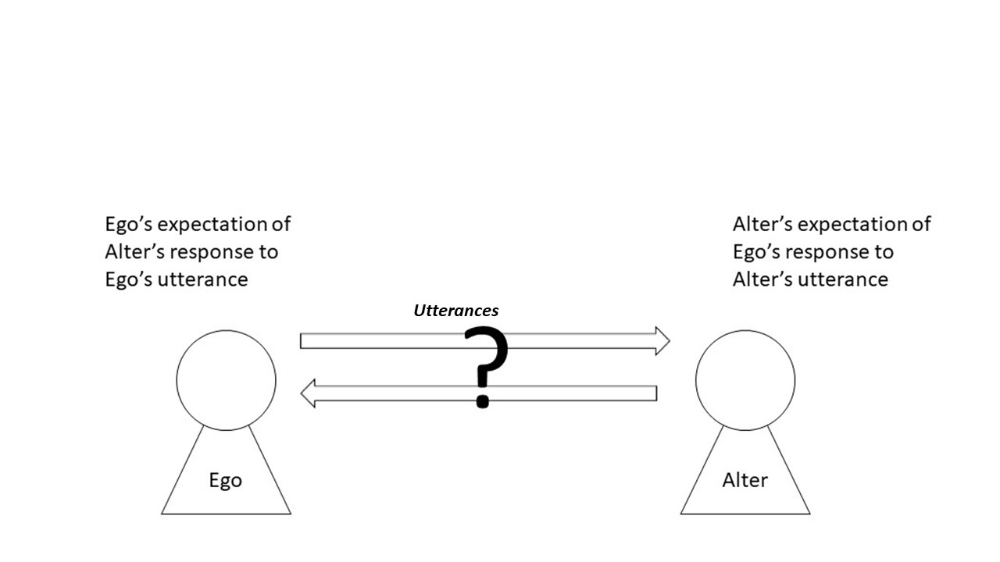
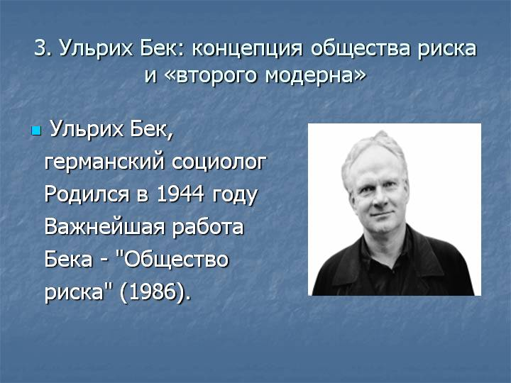

Межличностное общение / Интерсубъективность¶
38. Сознание¶
КЛЮЧЕВЫЕ ВОПРОСЫ
Как сознание может говорить о сознании? Как мозг может описать мозг?
Как можно доказать существование независимой от разума реальности?
Наш ум находится в нашей голове? Где еще он может быть?
ПОЧЕМУ ЭТО ВАЖНО
Основатель феноменологии Эдмунд Гуссерль пришел к тому, что для изучения сознания невозможно избежать проблемы, что независимо от индивидуального сознания (причем и сама идея личности является проблематичной) сознание одного перекликалось бы с сознанием другого.
Гуссерль рассматривал идею сознания между людьми или то, что он называл интерсубъективностью. Он утверждал, что сознание возникло в общей среде или «жизненном мире».
Гуссерль был в первую очередь сосредоточен на структуре сознания, и его идея интерсубъективности была обрамлена вокруг личного взаимодействия между двумя людьми. Более широкие отношения с обществом, современниками и предками не рассматривались.
Однако сознание находится между людьми при личном общении и между людьми, которые не находятся раядом с материальными объектами в мире (например, компьютерами) и, возможно, даже между разумом живых и мертвых (откуда нам знать?)
Часто нейронаука идентифицирует разум внутри головы: при этом она предполагает объективный мир «разума» за пределами разума, где возможно наблюдение через МРТ-сканеры!
39. Понимание понимания¶
КЛЮЧЕВЫЕ ВОПРОСЫ
Что значит «понимать»?
Можно ли проанализировать сознание между людьми
Насколько вы сознательны сейчас?
Можно ли отметить черты сознания?
ПОЧЕМУ ЭТО ВАЖНО
Понимание понимания – одна из проблем философии, которая называется «феноменология». Ее родоначальником считается Эдмунд Гуссерль и его последователь Альфред Шюц.
Альфред Шюц был другом Гуссерля и соединил гуссерлевское понимание сознания и интерсубъективность и то, как мы понимаем общество. Это было важным, так как чтобы понимать общество правильно, нам нужно понимать понимание. Вслед за Гуссерлем Шюц называл этот подход «интерсубъективностью».
Шюц видел попытку Гуссерля описать интерсубъективность как всеобъемлющую теорию разума, которая могла бы быть объединена с теорией социальной жизни. Тем не менее, Шюц считал, что совпадение Гуссерля с интерсубъективностью было недостаточным, поскольку основное внимание Гуссерля в рассмотрении интерсубъективности - это взаимно однозначные отношения и игнорирование более широкого измерения того, что Шюц называл «миром других».
Мир других, по словам Шюца, включает в себя ряд различных видов межсубъектных отношений, от интимных личных отношений до дистанционных отношений с «ровесниками».
Мир онлайн представляет собой четкое различие между личным общением и более отдаленными отношениями. Сам Шюц разделял личное общение, то, что он называл «чистым мы-отношением», и общением на расстоянии. Он определил так называемый «спектр яркости», утверждая, что различие между миром личного общения и «миром современников» можно проиллюстрировать опытом прекращения личной встречи .
40. Общение и ожидания¶
КЛЮЧЕВЫЕ ВОПРОСЫ
Можете ли вы общаться с кем-то, если вы не знаете, о чем думают эти люди?
Когда вы отправляете письмо по электронной почте кому-либо, с кем вы разговариваете?
ПОЧЕМУ ЭТО ВАЖНО
Социолог Толкотт Парсонс стремился развить идеи Шюца о ожиданиях в более систематическую теорию человеческого общения, утверждая, что то, что происходит в общении, является процессом, который он называет «двойной вероятность» (Parsons and Smelser 2012). Ожидания А о поведении С в ответ на высказывания А отражены ожиданиями Б о поведении А на высказывание Б. В своей переписке Парсонс и Шюц боролись между систематической и системно-теоретической характеристикой коммуникации (именно это и требовал Парсонс) и феноменологической и более тонкой характеристикой развития сознания в общении (к которому стремился Шюц) (Grathoff 1978).
Шюц считал, что в ситуации общения существует разница в глубине нашего восприятия в коммуникации. Например, личное общение предполагает богатое восприятие, онлайн сообщение предполагает более поверхностное восприятие.
«Уменьшающееся число восприятий», к которому обращается Шюц, предполагает, что каждый из сенсорных «каналов», которые несут альтернативные варианты встречи, деградирует с расстоянием.
То, что основано на этих множественных описаниях, как предлагает Шюц (в соответствии с Гуссерлем), это набор ожиданий относительно ситуации общения, без которой создание высказываний было бы невозможно. Другими словами, я могу только написать сейчас эти строки, потому что у меня есть некоторые ожидания вашего опыта как читателя.
Поэтому смысл моих слов зависит от координации ожиданий между людьми, которые общаются: Гуссерль назвал эти наборы ожиданий «горизонтами смысла», и поэтому можно сказать, то, что сообщается, - это не слова, а ожидания или значения.
Шюц не предполагает, что процесс «координации ожиданий» не происходит на расстоянии, но он предполагает, что механизмы, посредством которых значения устанавливаются и координируются между людьми, различны в ситуации, когда общение личное и когда физическое совместное присутствие отсутствует.
Анализ Шюца представляет несколько увлекательных вопросов: мог бы он сказать, что «чистое мы-отношение» все еще возможно на расстоянии, используя средства связи (скажем, Skype), которые не уменьшает количество восприятий?
{width=”\columnwidth”}
41. Диалог и умение слышать¶
КЛЮЧЕВЫЕ ВОПРОСЫ
Что происходит, когда мы внимательно слушаем кого-то?
После прослушивания, как мы формулируем ответ?
Можем ли мы научить людей лучше слушать?
ПОЧЕМУ ЭТО ВАЖНО
Диалог предполагает в большей степени умение слушать, чем просто в разговоре
В диалоге не обязательно должен быть свободный выбор, о чем можно поговорить: сказанное уже сказано в контексте того, что понимается по тому, что услышано другими.
Диалог формулирует структуру, которая имеет много уровней: разговоры об объекте создают разговоры о разговоре об объекте или разговор о разговоре о разговоре об объекте. Эти разные уровни дискурса меняются со временем. В результате возникают разные дискретные слои конструкции.
Дэвид Бом полагал, что в лучшем случае диалог отражает более глубокие структуры во вселенной. Многочисленные страты моделей взаимодействия в диалоге помогают нам воспринимать что-то более глубокое.
Объекты могут помочь в процессе диалога. Когда объект представлен (например, фотография), он предлагает множество разных описаний от разных людей. Когда эти описания объединены, он создает более богатую картину не только объекта, но и разных людей, которые описывают это.
Учителя особенно умеют генерировать несколько описаний одной и той же вещи. Процесс обучения - это процесс создания избыточности: учитель может сказать «подумайте об этом», или «вот пример», или «позвольте мне рассказать вам историю об этом» или «Что вы думаете?» (что является приглашением к нескольким описаниям, производимым другими).
Поощрение слушателей требует поощрения людей к пониманию важности множественных описаний вещей, а не к тому, чтобы быть использованными в одном «правильном» описании. Наука отчасти виновата в том, что она представляет мир в одном описании. Современная физика на самом деле говорит нам, что это происходит совсем по-другому.
42. Неудовлетворенность¶
КЛЮЧЕВЫЕ ВОПРОСЫ
Как отношения с родителями в детстве влияют на нас во взрослой жизни?
В чем состоит отношение между нами самими и нашей окружающей средой, что делает нас несчастливыми?
Какие факторы помогают смягчить неудовлетворенность чем-либо?
ПОЧЕМУ ЭТО ВАЖНО
Неудовлетворенность может иметь системное объяснение. В исследовании поведения животных выяснилось, что отношения между матерями и младенцами являются системными отношениями. Если матерей отделяли от младенцев, то результат был печальным.
Конрад Лоренц, являющийся пионером в этой работе, проецировал свои поиски на мир человека:
Конкуренция между людьми разрушает с холодной и дьявольской жестокостью … Под давлением этой мрачной ярости мы не только забыли, что полезно человечеству в целом, но даже то, что хорошо и выгодно для человека, […] Кто-то спросит, что более разрушает современное человечество: жажда денег или поспешное потебление … В любом случае страх играет очень важную роль: страх быть обойденным конкурентами, страх стать бедным, страх принять неправильные решения или страх быть не достаточно хорошим … (Lorenz, 2002)
В своей работе Лоренц заметил, как движение птенцов гусей поддерживает близость к матери. Он назвал этот механизм поддержания близости «импринтинг», или запечатление, и исследовал его параметры, заменив настоящих матерей трехмерной моделью, которая была представлена цыплятам в течение нескольких часов после вылупления: как следствие, птенцы-младенцы поддерживали близость к этому объекту, как если бы он был их матерью. Это был кибернетический эксперимент, в котором убедительно сочетались теоретические модели и эмпирические данные.
Означает ли это, что эмоции, такие как несчастье, горе, гнев, имеют свои корни в системном отношении между ребенком и родителем? В более широком смысле это может указывать на то, что связь между организмом и окружающей средой является решающим фактором эмоции.
Если это так, то это говорит о том, что проблемы переживания эмоций связаны с политическими проблемами в социальной среде: то, что Рональд Дэвид Лэйнг называет «политикой опыта» (R.D.Linging, 1990)
43. Приложение: Корни эмоций в детстве¶
КЛЮЧЕВЫЕ ВОПРОСЫ
Является ли привязанность ребенка к матери системным отношением?
Почему нарушение отношений ребенка со своей матерью приводит к психологической травме позже в жизни?
Можно ли понимать глубокие эмоциональные проблемы в терминах абстрактных систем?
ПОЧЕМУ ЭТО ВАЖНО
Джон Боулби заявлял, что «привязанность ребенка к его матери является продуктом деятельности целого ряда поведенческих систем, которые понимают близость к матери как предсказуемый результат».
Он предположил, что «маленькие дети, которые по какой-либо причине лишены непрерывной заботы и внимания матери, не только часто находятся под влиянием таких лишений, но могут в некоторых случаях страдать от долгосрочных последствий, которые могут продолжаться в течение долгого времени» (Bowlby et al., 1956)
Боулби назвал свой механизм «привязанностью» и выразил его в терминах: «Какие принципы организации необходимы, если поведение заключается в достижении этих целей?». Заявляя о своем организационном принципе, Боулби создает основу для анализа личности, возникающей из механизмов ранних отношений и организационной динамики развития. Он особенно сосредоточился на отношениях между ребенком и матерью, хотя проблема действительно связана с основным опекуном какого бы пола он ни был.
Демонстрация тезиса требовала внимания на то, что бы произошло, если бы близость к матери не являлась предсказуемым результатом. Что произошло, когда мать или отец отвергнули привязанность ребенка, или привязанность была затронута уходом кого-то из жизни, или резкими изменениями обстоятельств? Изучая это, Боулби обращается к некоторым фундаментальным проблемам психоанализа.
Следствием этого мнения было то, что поведение человека должно изучаться исходя из отношений. Люди были не индивидуумами, а взаимосвязанными системами: современная исследовательская работа по наркомании поддерживает его выводы. (P. J. Flores 2011).
44. Поддержка обучения¶
КЛЮЧЕВЫЕ ВОПРОСЫ
Как вы становитесь посредником в обсуждении, а не обладателем знаний?
Что такое личная интеллектуальная трансформация?
ПОЧЕМУ ЭТО ВАЖНО
Во время коммуникативного процесса выдвигаются и решаются сложные теоретические проблемы, анализируются научные материалы, сравниваются позиции различных научных школ, определяются и уточняются спорные моменты.
Общение между учащимися и преподавателем позволяет создавать научную информацию в единой гармоничной системе, выделять основные моменты в ней, выявлять позицию в анализе и помогать учащимся критически осмысливать предлагаемый фактический материал, понимать и оценивать его, выделяя наиболее необходимое и отбрасывая второстепенное.
Содержание сообщения - это информация, которую учитель предлагает студентам через различные средства коммуникации. Однако суть коммуникации не ограничивается обменом информацией. Для обеспечения того, чтобы содержание дисциплины ассимилировалось учащимися на высоком уровне, необходимо, наряду с педагогическими задачами, устанавливать и решать коммуникативные задачи.
В преподавании мы выбираем наиболее эффективные методы общения и на их основе организуем продуктивную связь между учителем и учеником.
Успешному общению способствует использование информационных продуктов и педагогических технологий, направленных на активизацию мышления учащихся. Как правило, опытные преподаватели интуитивно используют в своей работе синтез элементов творческого обучения.
Чтобы побудить студентов мыслить, документирование опыта и размышлений помогает расширить сферу исследования путем последовательной формулировки набора вопросов «Почему?» (подобно любопытству в детстве), и помогает выявить причинно-следственные связи, помогая лучше понять предмет и погрузиться в проблему исследования.
45. Риск и тревожность¶
КЛЮЧЕВЫЕ ВОПРОСЫ
Что вас волнует?
Мы больше беспокоимся, чем наши родители?
Создают ли технологические достижения больше поводов для беспокойства?
Тревога равномерно распределяется в обществе?
ПОЧЕМУ ЭТО ВАЖНО
Немецкий социолог Ульрих Бек утверждал, что мы сейчас живем в «обществе риска», где риски производятся как при создании новых технологий, так и в создании новых рисков в законодательстве, экономике и образовании.
Бек утверждает, что распределение рисков даже не равномерно: те, кто находится на дне общества, подвержены гораздо большему риску, с гораздо меньшим количеством средств для их решения, чем те, что находятся на вершине.
Он утверждает, что существует взаимосвязь между риском и образованием: новые технологии создают новые требования, чтобы научиться использовать новые инструменты, что увеличивает риск того, что многие не будут квалифицированы.
Кроме того, Бек утверждает, что само образование становится риском:
«Повсюду образовательная реформа сопровождается зависимостью от образования. Все больше и больше групп попадают в гонку за образовательные полномочия. В результате появляются новые внутренние дифференциации. Хотя они все еще могут реагировать на традиционные различия между группами, влияние образования делает их принципиально отличными от традиционных. […] В сочетании с новыми картинами восходящей и нисходящей мобильности и повышения мобильности рабочей силы на местах развиваются новые иерархии и дифференциации, которые являются внутренними для социальных классов. Они предполагают расширение сферы услуг и создание новых профессий» (Beck, 1992)
{width=”\columnwidth”}
46. Конструкт¶
КЛЮЧЕВЫЕ ВОПРОСЫ
Используете ли вы одни и те же слова, что и другие люди, чтобы описать мир?
Подразумеваете ли вы одно и то же, используя слова, которые используют и другие люди?
Раскрывают ли слова, которые мы используем для описания мира, то, как устроен мир или как устроены мы?
ПОЧЕМУ ЭТО ВАЖНО
Мы используем слова для описания нашей реальности, но реальность выглядит по-разному для каждого из нас.
Хотя это не означает, что реальность - это просто язык, но подчеркивает, что слова, которые мы используем, составляют важную часть ткани мира, через которую мы должны найти наш путь.
Поиск нашего пути в мире - это не то, что мы делаем в одиночку: мы должны общаться с другими людьми. Это означает, что мы должны согласовывать наше понимание слов, которые мы используем, с пониманием слов другими.
«Теория Личностного конструкта Джорджа Келли» - это подход к анализу различных способов, которыми люди создают свою реальность, анализируя разные слова, которые они используют в разных обстоятельствах.
Например, если бы я классифицировал «торты», я мог бы подумать о различных способах описания и классификации их, включая «сладкий», «мягкий», «тяжелый», «фруктовый» и т. д.
То, как я использую эти слова, может отличаться от того, как другие люди могут их использовать: поэтому, учитывая набор тортов, как я их классифицирую, они могут отличаться от того, как другие классифицируют их.
Ценность анализа Личностного конструкта - это раскрытие более широкого разговора о том, где действительно существуют различия, и о том, как разные люди с разными различиями могут координировать себя.